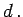
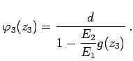
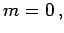
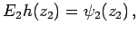
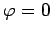
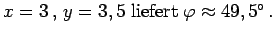

Inhalt Index DeskTop Bronstein

 Funktionen und ihre Darstellung Nomographie Fluchtlinientafeln
Funktionen und ihre Darstellung Nomographie Fluchtlinientafeln


Eine der parallelen Skalen wird auf die y-Achse gelegt, die andere auf eine Parallele dazu im Abstand  Die dritte Skala wird auf der Geraden y=mx angebracht. In diesem Fall geht (2.288) in
über. Entwicklung der Determinante nach der ersten Spalte ergibt
Daraus folgt
Häufig ist es zweckmäßig Maßstäbe E1 und E2 in der Form
einzuführen. Es gilt dann  Das Verhältnis E2:E1 kann man so wählen, daß die dritte Skala an einer bestimmten Stelle auseinandergezogen oder zusammengedrängt wird. Setzt man  dann gilt  und der Träger der dritten Skala geht in diesem Fall nicht nur durch den Anfangspunkt der ersten, sondern auch durch den der zweiten. Demzufolge muß man diese beiden so legen, daß sie in entgegengesetzter Richtung laufen, wenn man die dritte im wesentlichen zwischen den beiden Parallelen haben will.
| Beispiel |
|
Der Zusammenhang der kartesischen Koordinaten x und y eines Punktes in der x,y-Ebene und seines Winkels Für das zugehörige Nomogramm in der folgenden Abbildung sind die Maßstäbe für die beiden parallelen Skalen x und y gleich gewählt worden, aber beide Skalen laufen entgegengesetzt.
Um gute Schnitte der Fluchtlinien zu erhalten, sind ihre Anfangspunkte geeignet gegeneinander verschoben worden. Die Schnittpunkte der dritten Skala mit denen der ersten bzw. zweiten sind mit  bzw. Ablesebeispiel:  |